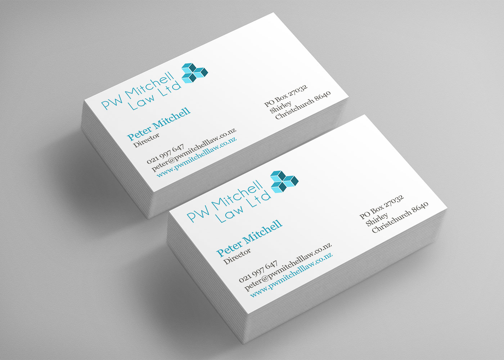

Web dev
Peter Mitchell Law
Logo, brand identity, and website for PW Mitchell Law Ltd, a Christchurch legal practice. The brief was to communicate trustworthiness — the logo uses interlocking blue building blocks as a motif, which carries through the colour scheme and into the site. A built-in blog gives the firm a space to publish articles and commentary.